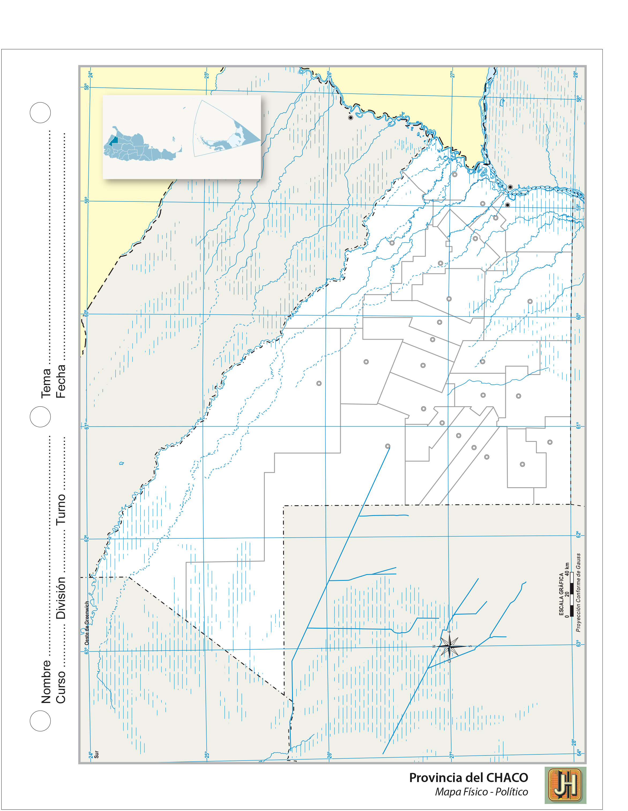
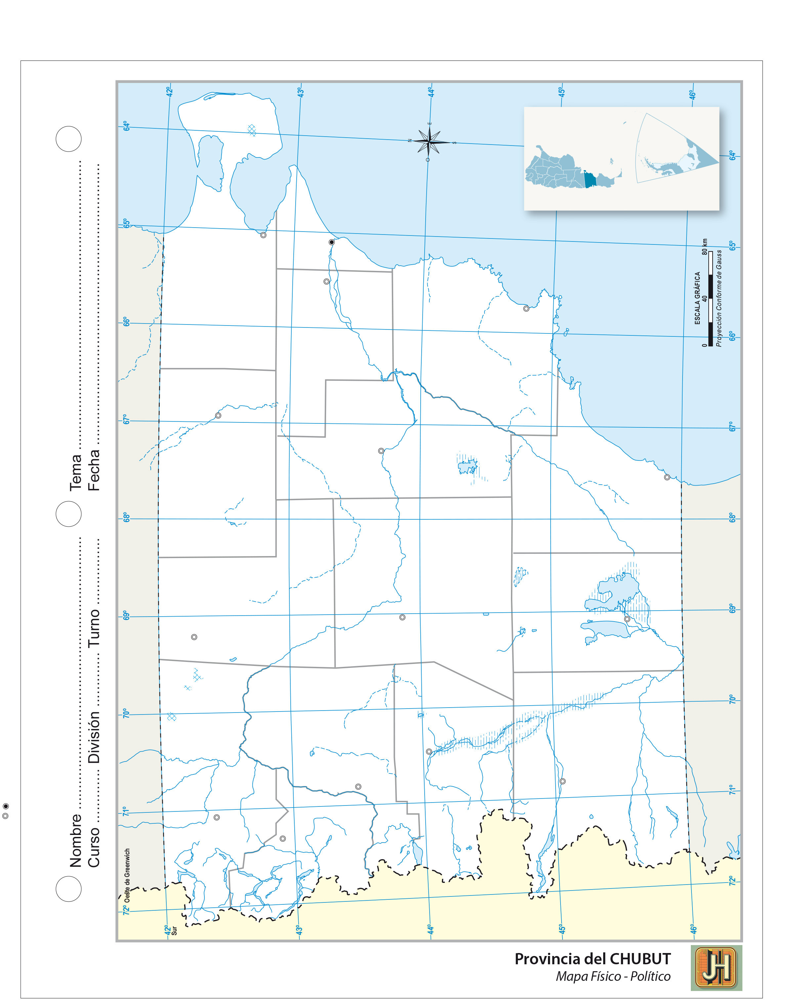
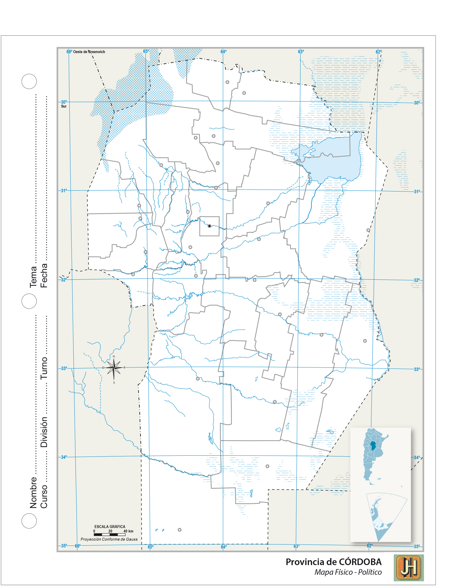
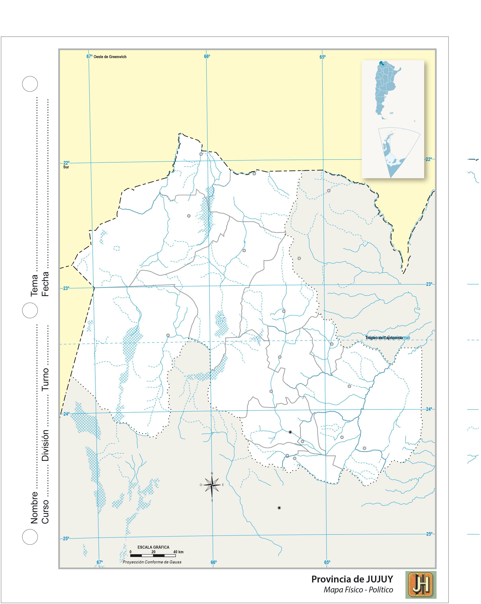
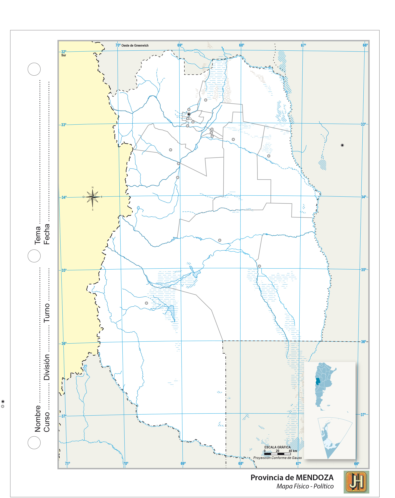
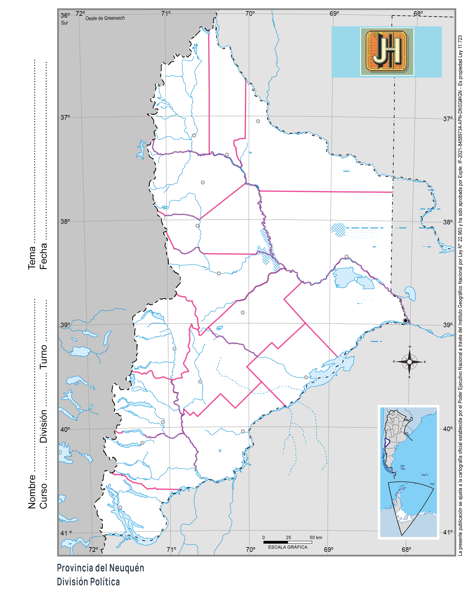
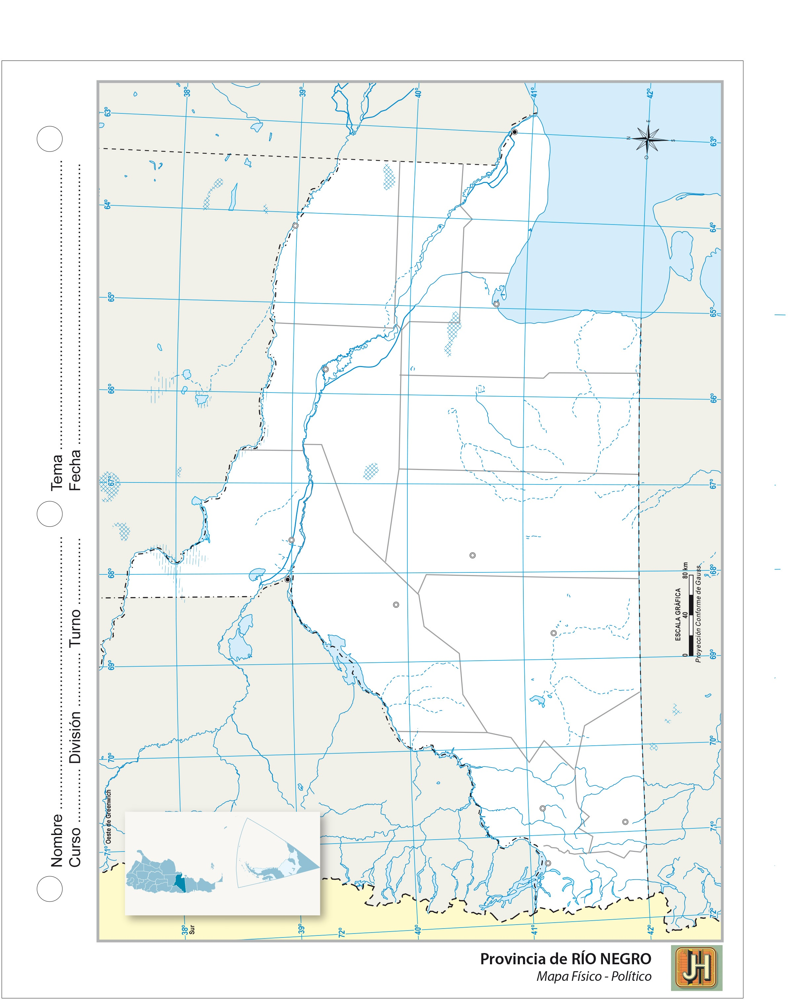
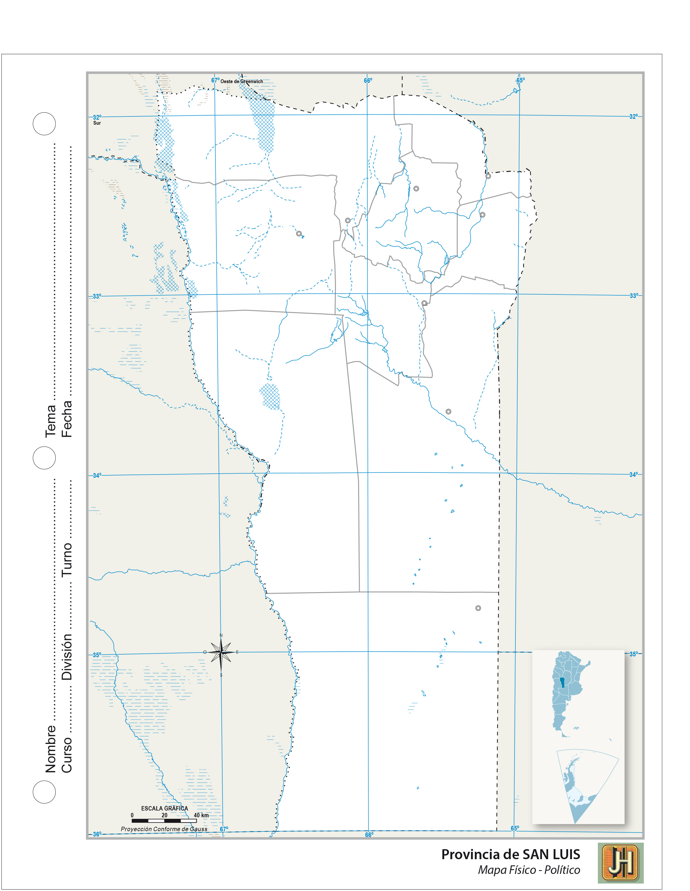
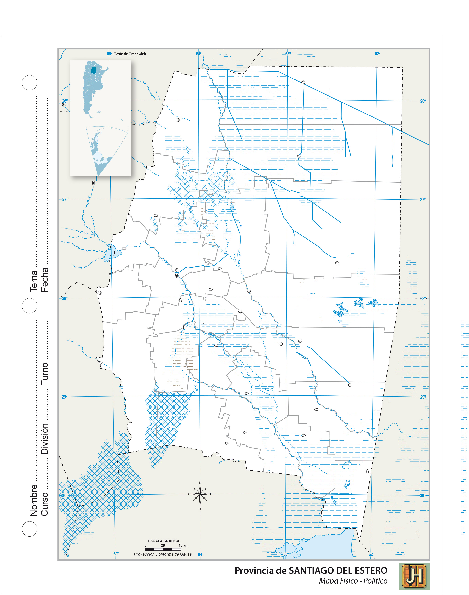
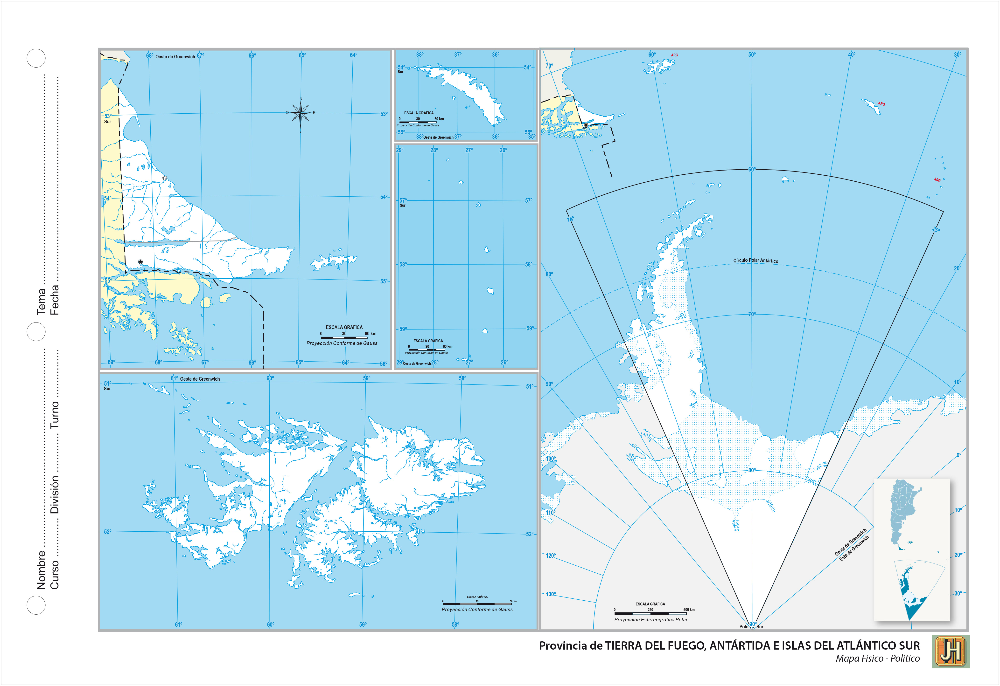

Mapas de las Provicias Argentinas
Ciudad de Buenos Aires (Detalle)

Este mapa muestra la Ciudad de Buenos Aires.
Descargar Mapa
Catamarca (Detalle)

Este mapa muestra los partidos de la provincia de Catamarca.
Descargar Mapa
Chaco (Detalle)

Este mapa muestra los partidos de la provincia de Chaco.
Descargar Mapa
Chubut (Detalle)

Este mapa muestra los partidos de la provincia de Chubut.
Descargar Mapa
Córdoba (Detalle)

Este mapa muestra los partidos de la provincia de Córdoba.
Descargar Mapa
Corrientes (Detalle)

Este mapa muestra los partidos de la provincia de Corrientes.
Descargar Mapa
Entre Ríos (Detalle)

Este mapa muestra los partidos de la provincia de Entre Ríos.
Descargar Mapa
Formosa (Detalle)

Este mapa muestra los partidos de la provincia de Formosa.
Descargar Mapa
Jujuy (Detalle)

Este mapa muestra los partidos de la provincia de Jujuy.
Descargar Mapa
La Pampa (Detalle)

Este mapa muestra los partidos de la provincia de La Pampa.
Descargar Mapa
La Rioja (Detalle)

Este mapa muestra los partidos de la provincia de La Rioja.
Descargar Mapa
Mendoza (Detalle)

Este mapa muestra los partidos de la provincia de Mendoza.
Descargar Mapa
Misiones (Detalle)

Este mapa muestra los partidos de la provincia de Misiones.
Descargar Mapa
Neuquén (Detalle)

Este mapa muestra los partidos de la provincia de Neuquén.
Descargar Mapa
Río Negro (Detalle)

Este mapa muestra los partidos de la provincia de Río Negro.
Descargar Mapa
Salta (Detalle)

Este mapa muestra los partidos de la provincia de Misiones.
Descargar Mapa
San Juan (Detalle)

Este mapa muestra los partidos de la provincia de San Juan.
Descargar Mapa
San Luís (Detalle)

Este mapa muestra los partidos de la provincia de San Luís.
Descargar Mapa
Santa Cruz (Detalle)

Este mapa muestra los partidos de la provincia de Santa Cruz.
Descargar Mapa
Santa Fe (Detalle)

Este mapa muestra los partidos de la provincia de Santa Fe.
Descargar Mapa
Santiago del Estero (Detalle)

Este mapa muestra los partidos de la provincia de Santiago del Estero.
Descargar Mapa
Tierra del Fuego (Detalle)

Este mapa muestra los partidos de la provincia de Tierra del Fuego.
Descargar Mapa
Tucumán (Detalle)

Este mapa muestra los partidos de la provincia de Tucumán.
Descargar Mapa
Islas Malvinas Físico Políto (Detalle)

Este mapa muestra las Islas Malvinas.
Descargar Mapa
Volver al Catálogo Principal

{kind=link}
{kind=link}
{kind=link}
{kind=link}
{kind=link}
{kind=link}
{kind=link}
{kind=link}
{kind=link}
{kind=link}
{kind=link}
{kind=link}